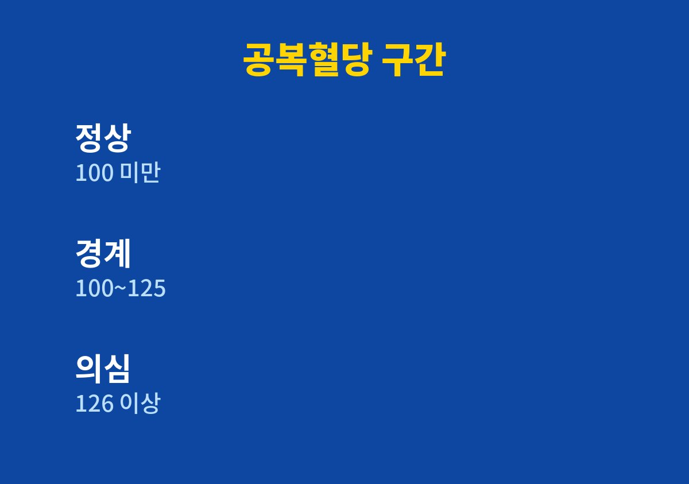
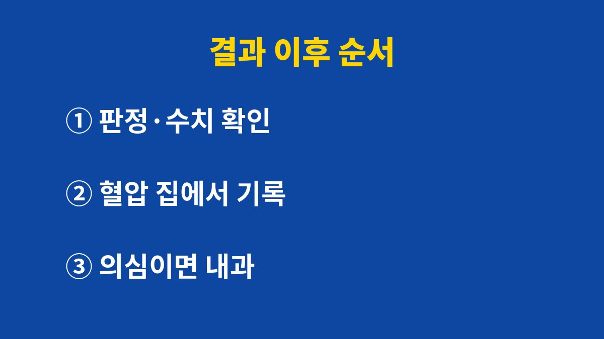

건강검진 결과에서 공복혈당이 100을 넘었다면 바로 당뇨라고 보지 않고 판정란과 수치 구간부터 확인하면 된다.
건강검진 결과표는 숫자 하나보다 판정과 구간을 같이 읽어야 의미가 보인다.
2026년 기준 공식 안내에서 쓰는 공복혈당과 혈압 구간을 오해하기 쉬운 장면 위주로 풀었다.
공복혈당이 100~125 mg/dL이면 당뇨병 전단계로 분류한다.
질병관리청은 이 구간을 생활습관을 바꾸지 않으면 당뇨병으로 넘어갈 수 있는 단계로 설명한다.
아직 약을 먹을 단계는 아니지만 그냥 넘길 구간도 아니다.
공복혈당 126 mg/dL 이상은 당뇨병 의심 구간이다.
의심과 확진은 다르다.
확진은 다른 날 다시 재거나 다른 검사를 함께 해서 의사가 판단한다.
진료실에서만 혈압이 높게 나오는 사람이 실제로 있다.
그렇다고 검진 때 높았던 수치를 없던 일로 하면 안 된다.
집에서 같은 시각에 재서 기록해 가면 의사가 판단하기 훨씬 쉽다.
세 가지 오해에는 공통점이 있다.
수치 하나를 보고 안심하거나 겁먹고 끝낸다는 점이다.
결과표는 한 번의 기록이라서 어제와 오늘, 작년과 올해를 이어서 볼 때 비로소 방향이 보인다.
내가 보기에 가장 아까운 경우는 경계 판정을 받고도 다음 검진까지 아무것도 바꾸지 않은 채 2년을 보내는 것이다.
바꿀 것은 거창하지 않아도 된다.
저녁 식사 시간을 앞당기거나 단 음료를 물로 바꾸는 정도로도 다음 결과표의 숫자는 달라질 수 있다.
| 항목 | 정상 | 경계(주의) | 질환 의심 |
|---|---|---|---|
| 공복혈당(mg/dL) | 100 미만 | 100~125 | 126 이상 |
| 혈압(수축기/이완기, mmHg) | 120/80 미만 | 120~139 또는 80~89 | 140 이상 또는 90 이상 |

공복혈당은 검진 전 8시간 이상 금식한 상태에서 잰 값이다.
금식이 부족했다면 평소보다 높게 나올 수 있어 결과표가 의심스러울 때는 그날 아침 식사 여부를 먼저 떠올린다.
혈압도 검진 직전에 계단을 오르거나 긴장했다면 평소보다 올라갈 수 있다.
반대로 경계 구간에 머물러도 매년 조금씩 올라가는 중이라면 가볍게 볼 일이 아니다.
수치의 위치보다 움직이는 방향이 더 많은 것을 알려 주는 경우가 있다.
그래서 나는 결과표를 받으면 사진을 찍어 두고 다음 해 결과와 나란히 비교한다.
결과표에는 보통 정상(A), 정상(B), 질환의심 같은 판정이 함께 적힌다.
표현은 결과표 양식에 따라 다를 수 있어 판정 이름보다 칸에 적힌 수치를 먼저 본다.
수축기와 이완기 중 한쪽만 기준을 넘어도 그 구간으로 본다.
경계 판정을 받았을 때는 서두르기보다 순서를 정해 두는 편이 마음이 덜 흔들린다.
아래 순서는 의사를 만나기 전에 내가 준비할 수 있는 부분만 모은 것이다.

야식과 단 음료를 적어 보면 생각보다 횟수가 많아 놀라는 사람이 많다.
기록은 반성문이 아니라 진료실에서 보여 줄 자료라고 생각하면 부담이 덜하다.
의사에게 무엇을 먹고 언제 잤는지 말할 수 있으면 같은 수치라도 조언이 훨씬 구체적으로 돌아온다.
결과표의 숫자는 지금 상태를 보여 주는 한 장의 기록이다.
경계 구간이라면 다음 검진 때 같은 칸이 어떻게 달라졌는지 비교하는 것이 가장 쉬운 점검이다.
결과표 사진을 휴대전화에 저장해 두면 다른 병원에 갈 때도 바로 보여 줄 수 있다.
목이 마르고 소변이 잦거나 두통과 어지럼이 계속된다면 검진 결과와 상관없이 전문의 진료를 받는다.
참고 자료: 질병관리청 국가건강정보포털 「당뇨병」(2026년 11월 확인) · 대한고혈압학회 「고혈압 진료지침」(2026년 11월 확인)
※ 2026년 기준 공식 기준을 바탕으로 정리한 일반 건강 정보이며, 증상이 계속되거나 지병이 있다면 전문의와 상담하길 바란다.